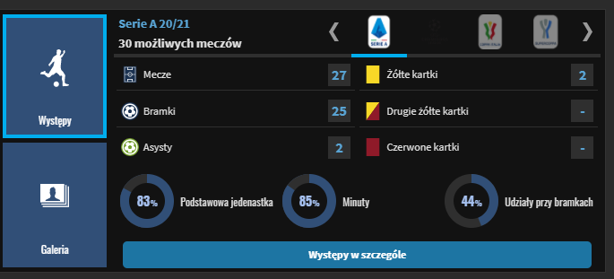
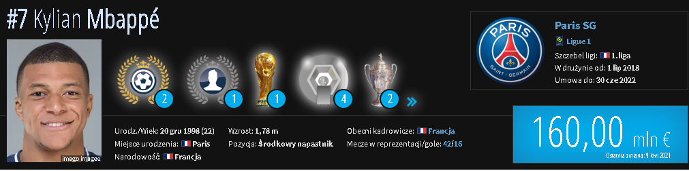
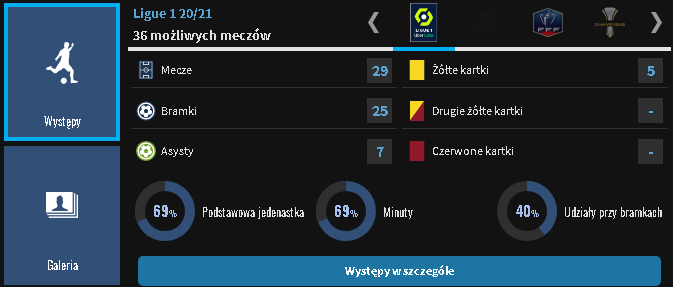
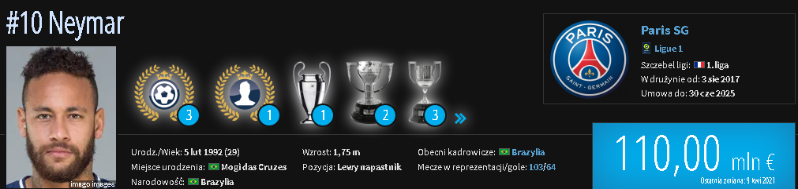
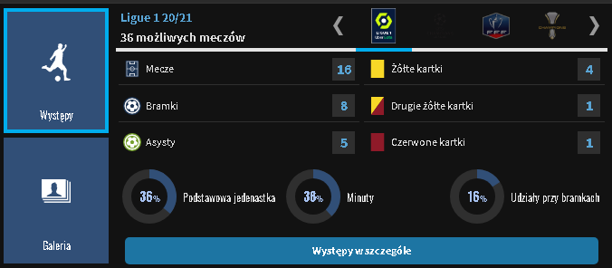
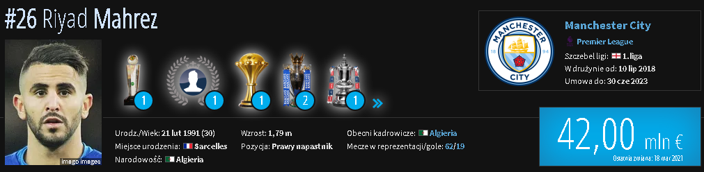
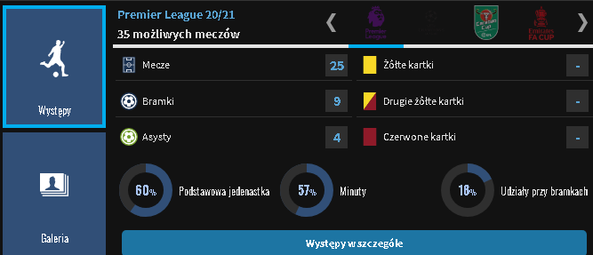
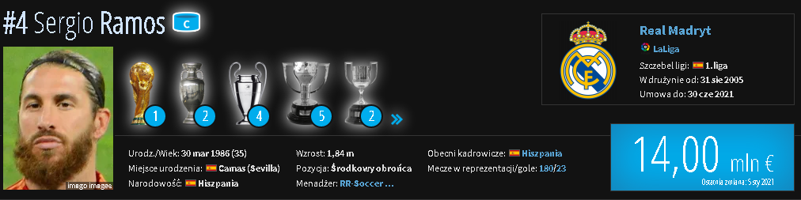

Klubową karierę Ronaldo rozpoczął w wieku 8 lat, w małym klubie CF Andorinha. W wieku 10 lat, trafił do jednego z największych klubów Madery, Nacionalu, a w 1997 do akademii Sportingu.
W 2003, w wieku 18 lat, podpisał kontrakt z Manchesterem United. Już w pierwszym sezonie zdobył z klubem Puchar Anglii, natomiast w kolejnych latach pomógł United w zdobyciu trzech z rzędu tytułów mistrzowskich, dwóch Pucharów Ligi, Tarczy Wspólnoty, wygraniu Ligi Mistrzów, a także klubowego mistrzostwa świata. W wieku 23 lat, w 2008, po raz pierwszy w karierze sięgnął po Złotą Piłkę, tytuł Piłkarza Roku FIFA oraz Europejski Złoty But.
W 2009 za 94 mln euro trafił z Manchesteru United do Realu Madryt, stając się najdroższym piłkarzem w historii. Podczas oficjalnej prezentacji, na Estadio Santiago Bernabeu, witało go ponad 80 tys. kibiców


W barwach AS Monaco zadebiutował 2 grudnia 2015, zmieniając Fabio Coentrao w 88. minucie zremisowanego 1:1 meczu z SM Caen.
Stał się tym samym najmłodszym debiutantem w historii klubu. Ze względu na obawę przed przekroczeniem przez paryski zespół zasad finansowego fair play 31 sierpnia 2017 został wypożyczony z AS Monaco do Paris Saint-Germain
do końca sezonu 2017/2018 i dopiero 1 lipca następnego roku mogli wyłożyć kwotę w wysokości 180 mln euro, tym samym kupując piłkarza. W ten sposób Mbappé stał się drugim ówcześnie najdroższym transferem w historii futbolu


Neymar Jr. swoją profesjonalną karierę zaczynał w Santosie FC. Od 2009 był podstawowym zawodnikiem pierwszej drużyny.
26 maja 2013 Neymar ogłosił, że od nowego sezonu będzie zawodnikiem FC Barcelony. Brazylijczyk podpisał kontrakt na 5 lat.
3 sierpnia 2017 podpisał pięcioletni kontrakt z francuskim klubem Paris Saint-Germain. Kwota transferu wynosiła 222 miliony euro i była najwyższa w historii futbolu.


Na początku swojej kariery Mahrez był często lekceważony przez wiele klubów z uwagi na swoją wątłą budowę ciała, w końcu jednak zwrócił na siebie uwagę umiejętnością panowania nad piłką[2]. W 2004 roku dołączył do małego klubu AAS Sarcelles[3]. Pięć lat później podpisał kontrakt z czwartoligowym wówczas Quimper, w którego barwach w trakcie kolejnego roku rozegrał 27 spotkań ligowych i zdobył jedną bramkę.
Z czasem wzbudził zainteresowanie m.in. ze strony Paris Saint-Germain oraz Olympique Marsylii, jednakże odrzucił ich oferty, gdyż zaoferowano mu tylko grę w zespołach juniorskich[2]. W końcu latem 2010 roku został zawodnikiem Le Havre AC. Początkowo występował głównie w drużynie rezerw, jednakże już w lutym 2011 roku podpisał z klubem profesjonalny kontrakt. W sumie, w trakcie nieco ponad dwóch sezonów rozegrał w rezerwach 60 spotkań i strzelił 24 gole.
10 lipca 2018 podpisał kontrakt z Manchesterem City.


Karierę rozpoczynał w Sevilli. W sezonie 2004/2005 rozegrał 31 ligowych spotkań, udało mu się strzelić 2 bramki, a ostrzegany przez sędziów kartkami był zaledwie pięciokrotnie. Świetne występy w Pucharze UEFA sprawiły, że okrzyknięto go najlepszym młodym graczem tych rozgrywek w sezonie 2004/2005. Ramos zaliczył także występy w młodzieżowej reprezentacji Hiszpanii do lat 21. Zadebiutował w niej w 2004. Rozegrał 6 spotkań. Latem 2005 Real Madryt rozpoczął starania o przeprowadzenie transferu obrońcy Sevilli. Negocjacje zakończyły się sukcesem dopiero wieczorem 31 sierpnia, na chwilę przed zamknięciem okienka transferowego. Kwota transferu wyniosła 27 mln euro. Sezon 2007/2008 Hiszpan zaczął rewelacyjnie.
Strzelił kilka bramek i znacznie przyczynił się do zdobycia punktów przez swój zespół.W 2014 w Lizbonie wygrał po raz pierwszy w karierze Ligę Mistrzów. W finale Real Madryt pokonał po dogrywce Atletico Madryt 4:1. To właśnie dzięki bramce Hiszpana w doliczonym czasie drugiej połowy meczu Real zdołał wyrównać i doprowadził do dogrywki. Hiszpański dziennik Marca uznał Ramosa za najlepszego zawodnika lizbońskiego finału.
10 lipca 2018 podpisał kontrakt z Manchesterem City.
© UEFA - dla Kibiców